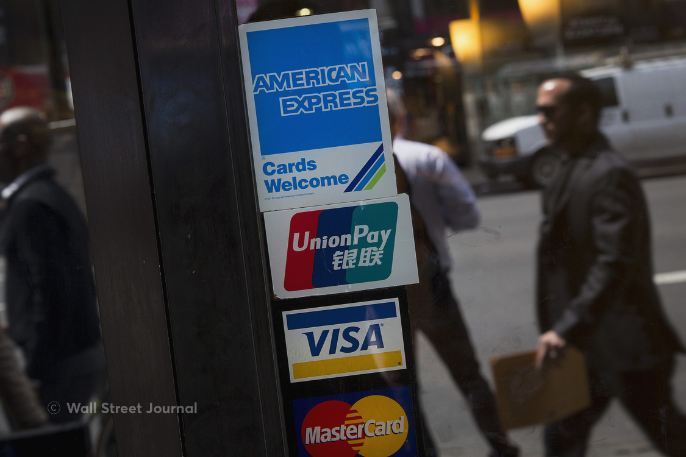

현지에서 카드 사용 시 주의 사항이 있을까요? 현지에서 쓸 돈은 이미 환전했지만 혹시 모를 큰 지출이 생길까 고민하며 신용카드 하나를 챙겨봅니다. 모르고 사용하면 수수료 폭탄을 받을 수 있으니 카드 결제 시 주의하세요!
체크카드는 결제 취소하면 돈이 묶인다?
체크카드로 결제하고 취소하게 되면 돈이 한 달가량 통장에 묶이는 불상사가 발생할 수도 있습니다. 이를 풀려면 카드사에 서류를 보내는 등 복잡하고 귀찮은 절차가 있으니 신용카드를 챙겨가시거나 넉넉히 환전하세요.
IC칩 비밀번호를 설정하세요!
보통 동남아시아, 유럽의 국가들은 카드 비밀번호를 눌러야 결제 승인이 떨어집니다. 4자리 숫자로 카드 비밀번호와 같으면 다행이지만 등록이 안된 경우에는 신용카드를 사용할 수 없습니다. 또 비밀번호가 3회 이상 틀리게 되면 카드가 정지되는데요. 여행 전 IC 카드 칩 PIN 번호가 제대로 등록되었는지 꼭 확인하세요!
*6자리 비밀번호를 요구하는 경우엔? 4자리+00을 눌러보세요
반드시 결제는 ‘현지 통화’로 하세요.
해외에서 카드로 결제하면서 원화(KRW)로 결제할 것인지 표시되는 메시지 보신 적 있으세요? 해외에서 신용카드를 사용할 때 KRW로 결제하는 서비스를 흔히 DCC(Dynamic Currency Conversion)라고 부릅니다.
DCC가 적용되면 해외에서 KRW로 결제하면서 붙는 수수료에 다시 현지 통화로 바뀌면서 붙는 수수료가 추가 발생하여 이중으로 수수료를 발생하게 됩니다. 이때 약 3~10%의 높은 수수료가 붙게 되어 난감할 수 있습니다. 이 수수료는 카드 청구서를 받을 때에 정확히 알 수 있으므로 주의가 필요합니다.
쉽게 말해서 100만 원을 결제하면서 KRW을 선택하면 10만 원의 수수료가 더 빠져나갈 수도 있는 겁니다. 현지 통화로 결제하겠다고 했는데 KRW로 결제된다면 절대 서명하지 마시고 다시 결제해 달라고 요청하세요!
해외여행을 떠나기 전 이용하는 카드사를 통해 해외 원화결제 차단 서비스를 신청하시는 것도 좋은 방법입니다.